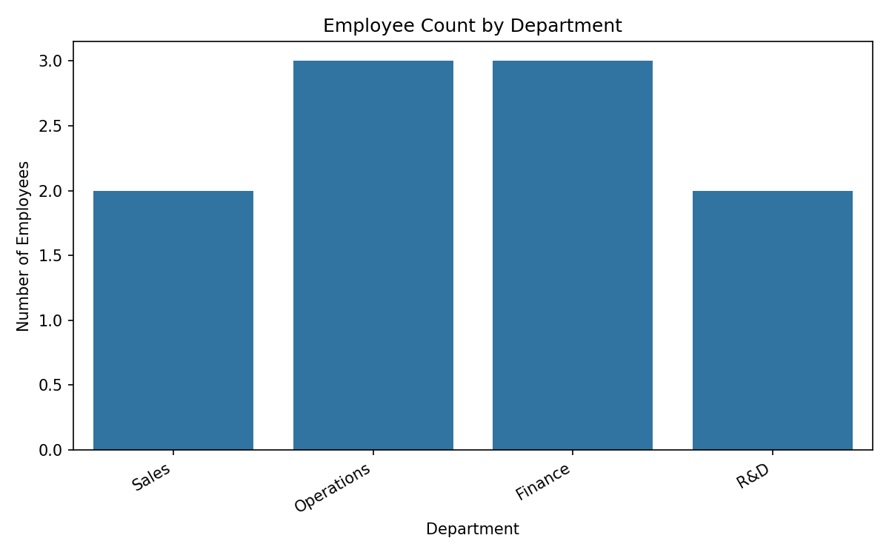

Student email (for verification): 24f3000312@ds.study.iitm.ac.in
import pandas as pd
import matplotlib.pyplot as plt
import seaborn as sns
# Employee Performance Analysis
# Email for verification: 24f3000312@ds.study.iitm.ac.in
# 1. Load the employee data
df = pd.read_csv("employee_performance.csv")
# 2. Calculate the frequency count for the "Sales" department
sales_count = (df["department"] == "Sales").sum()
# 3. Print the frequency count to the console
print("Number of employees in the Sales department:", sales_count)
# 4. Create a histogram-like bar chart showing
# the distribution of departments
plt.figure(figsize=(8, 5))
sns.countplot(x="department", data=df)
plt.title("Employee Count by Department")
plt.xlabel("Department")
plt.ylabel("Number of Employees")
plt.xticks(rotation=30, ha="right")
plt.tight_layout()
# 5. Save the visualization as a PNG (used later in HTML)
plt.savefig("department_distribution.png", dpi=150)
The chart below shows the number of employees in each department.
